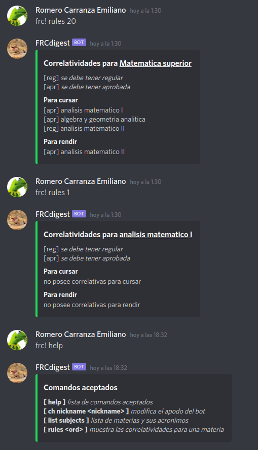

Participar en el proyecto
Un vistazo

Tu primer issue
De entre la lista de issues activos, aquellos que son considerados aptos para recién iniciados en el proyecto, llevan una etiqueta de buen primer issue
Si tenés una sugerencia o encontraste algún bug o problema, también podés simplemente crear un nuevo issue
Con quién hablar
Si tenés dudas sobre cómo sumarte al proyecto, podés consultar por gitter
Si estás en el servidor de discord de Sistemas, podés enviar un mensaje en ese mismo servidor etiquetando:
@Romero Carranza Emiliano
Cómo lo hacemos
...descripción del proceso de desarollo